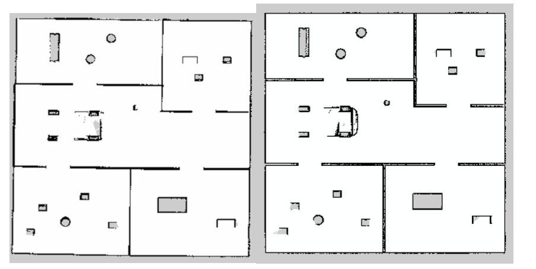
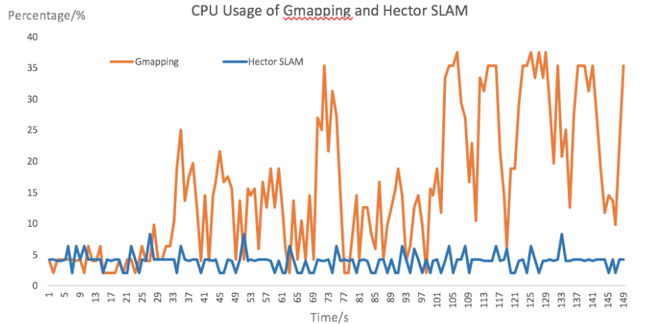
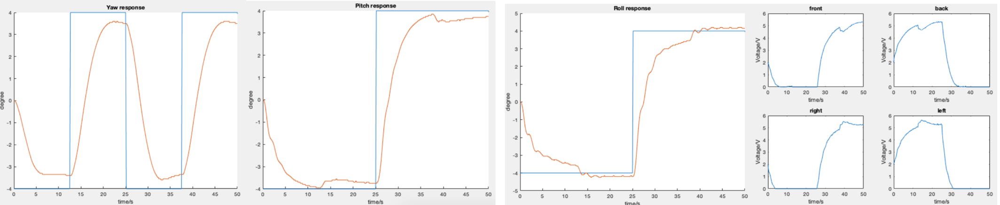
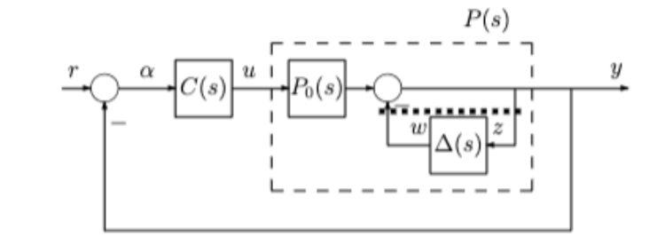
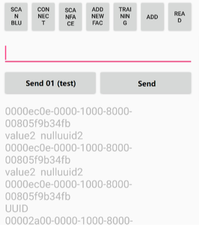
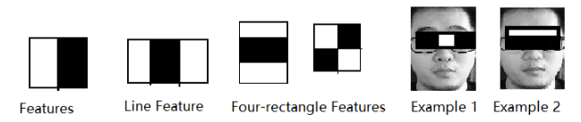
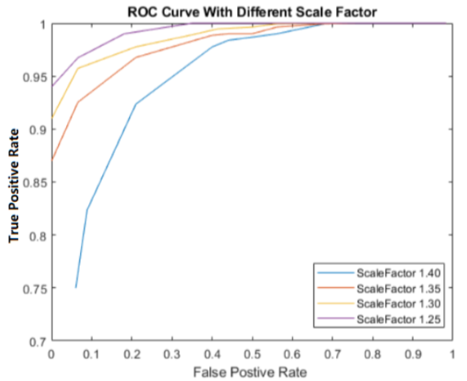
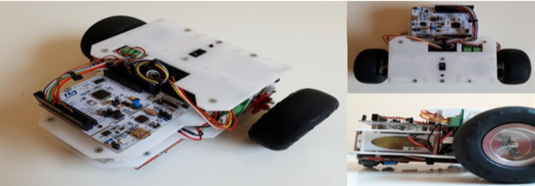

Zhenyu Du
I am a graduate student at the University of Manchester, majoring in Advanced Control & Systems Engineering. My advisor was Dr. Alexandru Stancu. My research interest focuses on Robotics particularly in Autonomous Driving, path planning and simultaneous localization and mapping (SLAM).
Curriculum Vitae
Email:zhenyu_du@outlook.com
Phone: +86 13229456680
Address: No.172, Jing'an District, Shanghai, China
News
Education
Project Experiences
The simultaneous localization and mapping algorithm (SLAM) is a challenging and essential topic for a mobile robot. This project mainly discussed the impact of the number of distinctive landmarks on the accuracy of Lidar SLAM algorithms and proposed a possible improvement.
This project constructed four indoor scenes and one outdoor scene. Both Gmapping and Hector SLAM performed very well in the indoor enviroment with variety distinctive landmarks.

(a)Gmapping SLAM (b)Hector SLAM
The map built by Hector SLAM did not align with the ground truth. Both short corridors were performed correctly and accurately; however, two long corridors were mismatched in length and position. Hector SLAM only used laser data instead of odometry, and the laser data was kept unchanged when the mobile robot went through the long corridor.

(a)Hector SLAM (b)Gmapping SLAM
The average CPU usage for Gmapping SLAM was about 19.19%, and the Hector SLAM was only 3.89%. It illustrated the Gmapping SLAM consumed more CPU resources and was more suitable for small and indoor scenes.
Then, I fused the estimated position both from the odometry and the Lidar to improve the performance of the Hector SLAM with the long corridor. Meanwhile, I also used the Inertial Measurement Unit (IMU) data to prevent the robot from losing its position due to a large rotation angle.In this project, a linear multi-variable controller is designed to control the altitude of the quadrotor unmanned aerial vehicle (UVA). With the aim to control the UVA, the linearized model is obtained firstly from the non-linear system. Then, the controller is produced, and several parameters are tuned base on the LQG theory. Finally, the simulation of the nonlinear system is analysed in the Simulink in order to test the performance and robustness of the controller.

Finally, I used the Output Inverse Multiplicative Uncertainty Structure to test the performance and robustness of the controller.




publications
I haven't published any papers yet, but I firmly believe that there will be ones in the future!